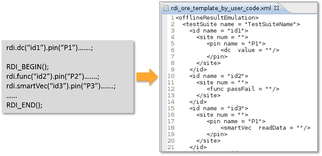

Template file based on user code
SmartRDI allows you to generate ORE template files from your code.
If the keyword ORE_TEMPLATE_BY_USER_CODE in the RDI_Configure file is set to TRUE, SmartRDI can use the content of user code to generate a specific template file. All SmartRDI measurements (with id) in the code will have corresponding result contents in the specific template file. The following image shows part of both the original code and the generated ORE template contents. An ORE template file named rdi_ore_template_by_user_code.xml is generated.

Based on the generated ORE template file, you can add result values and site information to create your own ORE file.
Generating an ORE template file for each execution
In SmartRDI 7.10.0, you can add the test results of each execution into an ORE template file. SmartRDI provides a function rdi.startNextOreTemp() to define a separate point between executions so the template file generation for each execution can be achieved.
The ORE result after the separate point will be put into a new template file named rdi_ore_template_by_user_code_N.xml. Here, N stands for a number starting from 0. In the first run, rdi_ore_template_by_user_code_0.xml will be generated for the first execution; in the second run, rdi_ore_template_by_user_code_1.xml will be generated for the second execution.
Also see rdi.startNextOreTemp().
Functional changes
- Introduced in SmartRDI 7.5.1
- SmartRDI 7.10.0: Results of each execution is added to a separate template file.